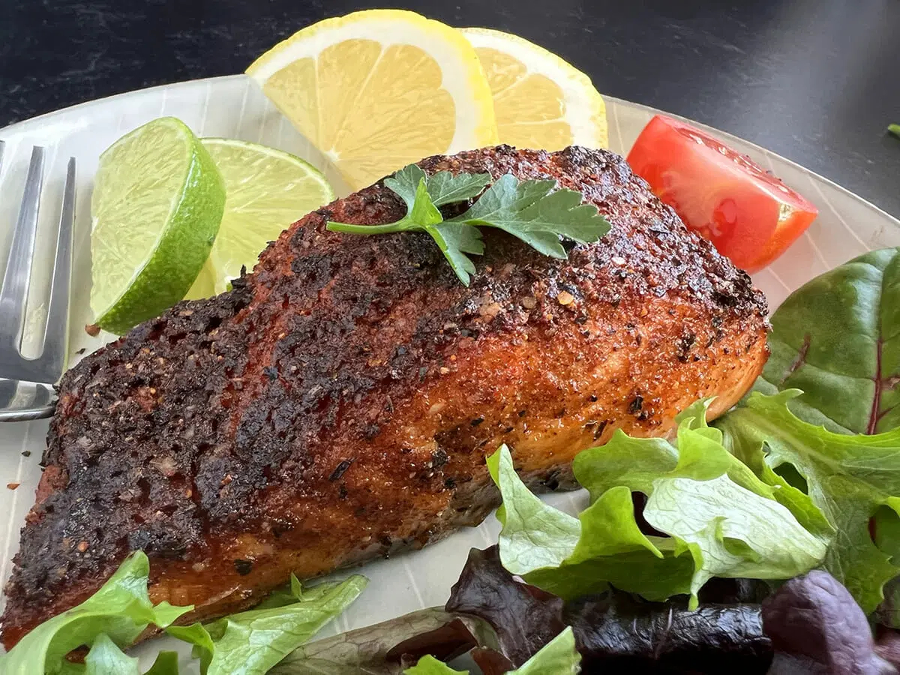

Cajun Air Fryer Salmon
Description
Savor the exquisite flavors of Air-Fried Cajun-style salmon, ready in under 10 minutes, by seasoning generously with Cajun seasoning and a pinch of salt if using unsalted seasoning. Choose 1-inch-thick, center-cut fillets and select either a Misto sprayer or regular cooking spray for a convenient and mouthwatering gourmet experience.
Recipe by France C | Updated on April 7, 2023Ingredients
- cooking spray
- 1 tablespoon Cajun seasoning
- 1 teaspoon garlic powder
- 1 teaspoon brown sugar
- 2 (6 ounce) skin-on salmon fillets
Steps
- Gather all ingredients. Preheat the air fryer to 390 degrees F (200 degrees C).
- Rinse and dry salmon fillets with a paper towel. Mist fillets with cooking spray.
- Mix together Cajun seasoning and brown sugar in a small bowl until combined; spread onto a plate.
- Press fillets, flesh-side down, into seasoning mixture.
- Spray the basket of the air fryer with cooking spray and place salmon fillets skin-side down. Mist salmon again lightly with cooking spray.
- Close the lid and cook in the preheated air fryer for 8 minutes. Remove from the air fryer and let rest for 2 minutes before serving.
Cook's Note:
Increase the cook time by 1 to 2 minutes if you prefer your salmon slightly more done. Do not overcook as it will dry out the salmon.